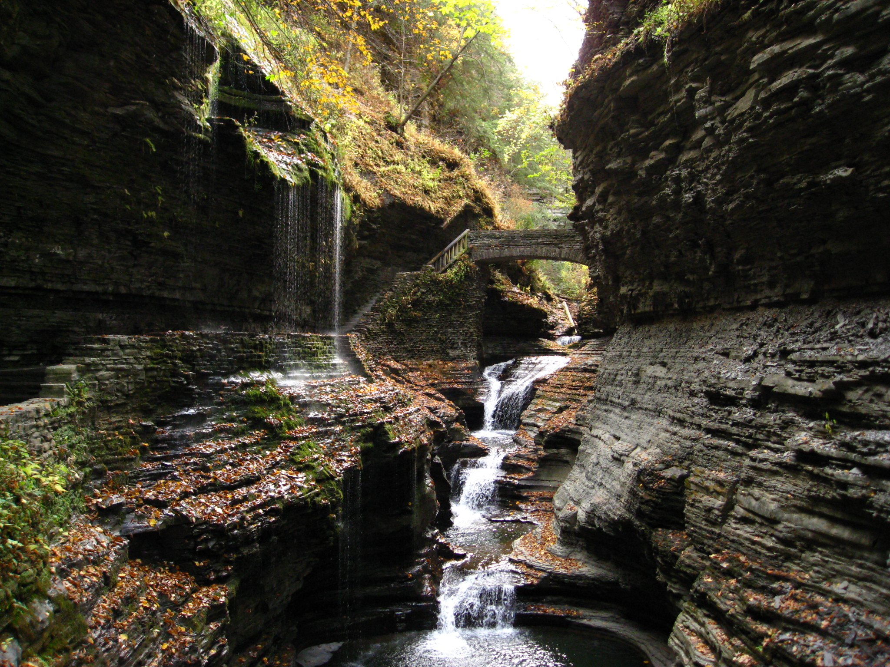
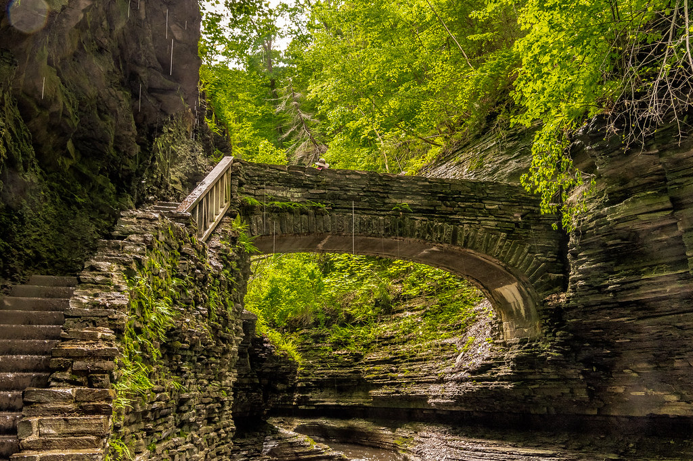

All about Watkins Glen State Park
Watkins Glen is the most popular park in the Fingerlakes region with several trails. A must-see is the Gorge trail, recommended for those wanting a scenic route with 19 waterfalls. For those interested, The Glen possesses many activities such as: Watkins Glen has something for everyone to enjoy!
Here are some of the views of Watkins Glen:


Additional info can be found here and below: